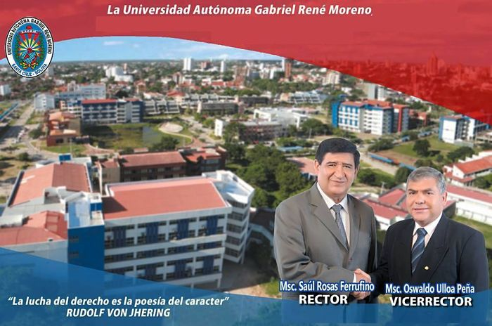

La Universidad Autónoma "Gabriel René Moreno", fundada el 11 de enero de 1880, en la ciudad de Santa Cruz de la Sierra, es una institución de educación fiscal de derecho público, dotada de personalidad jurídica, patrimonio propio, autonomía académica, administrativa, financiera y normativa de acuerdo con los preceptos constitucionales de la República de Bolivia.
Nuestra Universidad lleva el nombre del Ilustre Pensador, Historiador y Literato Boliviano Gabriel René Moreno, llamado el "Príncipe de las Letras" , y se reconoce por la sigla UAGRM.
La UAGRM comprometida con Santa Cruz de la Sierra, Bolivia y Latinoamérica tiene la tarea de contribuir al desarrollo de la sociedad mediante la producción de conocimientos científicos, la formación de profesionales de excelencia, la transferencia tecnológica, la participación activa en las luchas sociales por el bienestar de todos, la promoción cultural y el resguardo de las múltiples identidades que hacen la Bolivia de hoy.
La UAGRM cuenta con 12 Facultades y 5 Facultades Integrales, 5 Unidades Academicas, 61 Direcciones de Carrera, 6 Direcciones Universitarias, 25 Centros de Investigación, una planta de más de 1400 docentes y 1460 Administrativos, en sus aulas se forman alrededor de 78,000 estudiantes.
El análisis del contexto nos muestra escenarios actuales y perspectivos que plantean grandes desafíos y exigen grandes transformaciones. Estos escenarios se caracterizan por la masificación de la matrícula de la Universidad, el nacimiento de decenas de centros educativos del nivel terciario, la emergencia de nuevos y distintos programas de formación profesional, la necesidad de acreditar la calidad de los servicios educativos, la obligación de responder con pertinencia a las demandas del mundo del trabajo y del desarrollo de la sociedad, la urgencia de incorporar a los proceso de formación de los futuros profesionales los avances de la ciencia y la tecnología, cuyo desarrollo acelerado apresura el envejecimiento de los saberes.
Durante más de un lustro la UAGRM ha emprendido una serie de acciones encaminadas a la inserción de la Universidad en la Sociedad del Conocimiento. Los hitos más relevantes en este proceso son: la introducción de los procesos de autoevaluación y acreditación de las carreras que se ofertan en la Universidad, el movimiento de modernización académica que condujo al proceso de rediseño curricular por competencias, la decisión de crear una estructura que proyecte el desarrollo académico y que contribuya al mejoramiento continuo de la calidad, mediante la gestación, capacitación y asesoría en la implementación de políticas, planes y proyectos, destinados a innovar las estructuras, los programas de formación profesional y la gestión del conocimiento. A estos esfuerzos se unen la política de reordenamiento académico, que permite una organización más eficiente de los servicios educativos que brinda la Universidad, el proceso de descentralización administrativa que confiere autonomía a las Facultades y la capacitación en temas relevantes de la Educación Superior de más de 700 profesores, que se convierten en agentes de los cambios y de la Reforma Universitaria.